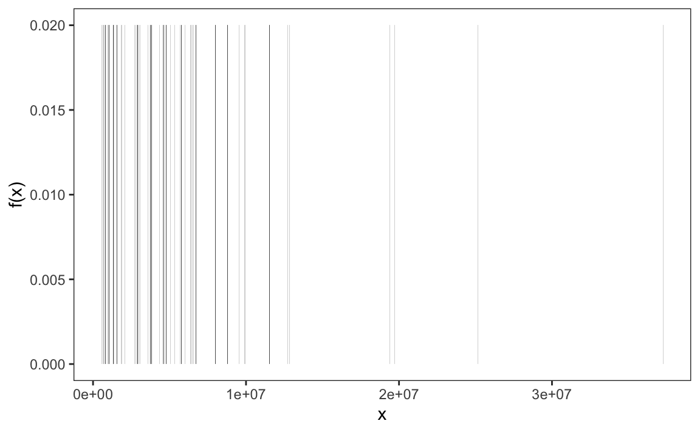
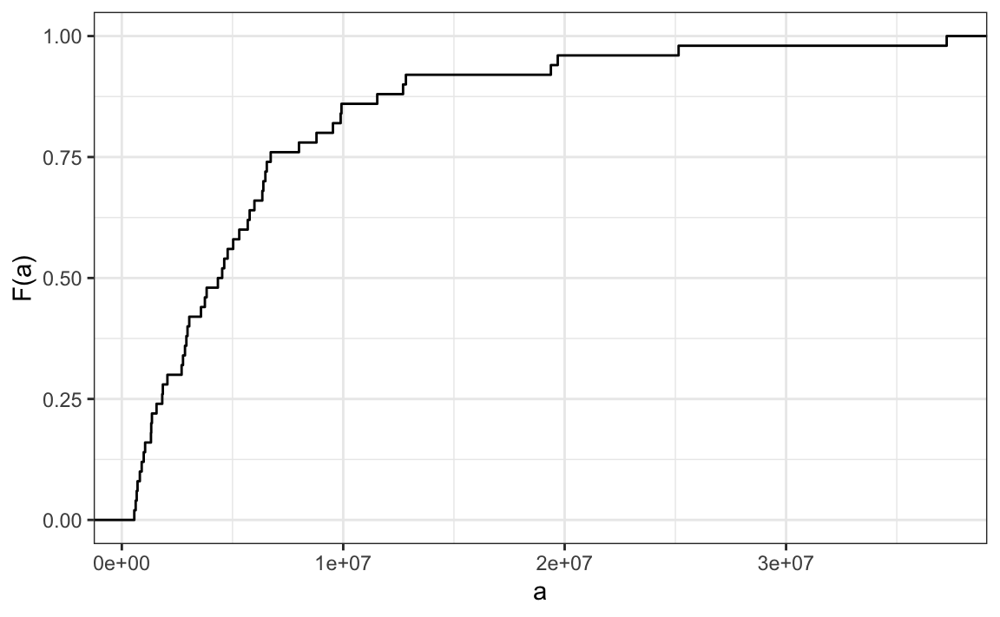

1 Distributions
Before we begin, we clarify that this chapter will not cover distributions in the context of probability, which is the mathematical framework used to model uncertainty. We postpone that discussion until the next part of the book, where we will use it throughout. Here, we focus on distributions as a way to describe and summarize data we’ve already collected. Our goal is to understand the variation and patterns present in a dataset, without yet making probabilistic claims or predictions. The concepts introduced in this chapter will later serve as the foundation for understanding probability distributions, where similar tools are used to describe the likely outcomes of random processes.
To illustrate the concepts needed to understand distribution and how they relate to summary statistics, we will pretend that we have to describe the heights of our classmates to ET, an extraterrestrial that has never seen humans. As a first step, we need to collect data. To do this, we ask students to report their heights in inches. We ask them to provide sex information because we know there are two different distributions by sex. We collect the data and save it in the heights data frame included in the dslabs package.
One way to convey the heights to ET is to simply send him a list with all the heights. However, there are much more effective ways to convey this information, and understanding the concept of a distribution will help. To simplify the explanation, we first focus on male heights. We examine the female height data in Section 3.3.
At this stage, we are thinking of distributions purely as tools for summarizing and describing data. In the next part of the book, we will connect these same ideas to probability, where distributions help us model uncertainty. For now, our goal is simply to explore the patterns and variation present in the data we do have.
It turns out that, in some cases, the two summary statistics introduced in the next chapter, the average and the standard deviation, are all we need to understand the data. We will learn data visualization techniques that will help us determine when this two-number summary is appropriate. These same techniques will serve as an alternative for when two numbers are not enough.
1.1 Variable types
Knowing what variable type we are working with is important because it will help us determining the most effective way to summarize our data and display its distribution.
We will be working with two types of variables: categorical and numeric. Each can be divided into two other groups: categorical can be ordinal or not, whereas numerical variables can be discrete or continuous.
When data values represent groups instead of numbers, we refer to the data as categorical. Two simple examples are sex (male or female) and US regions (Northeast, South, North Central, West). Some categorical data can be ordered even if they are not numbers, such as spiciness (mild, medium, hot). These ordered categorical data are referred to as ordinal data.
Numerical data can be continuous or discrete. A continuous variable can take on any value within a range. For example, if measured with sufficient precision, height is continuous because the difference between two individuals (even identical twins) can be an arbitrarily small fraction. However, if height is rounded to the nearest inch, it becomes discrete since values must be a whole number. Other examples of discrete data are the number of heads when tossing 10 coins, the number of cigarettes a person smokes a day, or the number of customers visiting a store in an hour. In these cases, the values are countable and cannot take on fractional values. Unlike continuous data, which can be measured with increasing precision, discrete data are limited to distinct, separate values.
In practice, there are occasions in which discrete variables are treated as continuous. For example, a digital measuring instrument might record data as 16-bit integers. However, because it is rare to obtain exactly the same reading more than once, it is convenient to treat the data as continuous. Another example is country population size. Although population counts are always whole numbers, it is uncommon for two jurisdictions to have exactly the same population. For this reason, population size is also commonly treated as continuous.
1.2 Relative frequency distribution
The most basic statistical summary of a list of numbers or categories is its distribution. The simplest way to think of a distribution is as a compact description of values with many entries. This concept should not be new for readers of this book. For example, with categorical data, the relative frequency distribution simply describes the proportion of each unique category:
\[ p_k = \frac{\mbox{number of times category }k \mbox{ appears in the list}}{n} \]
with \(n\) the length of the list.
Here is an example with US state regions:
prop.table(table(state.region))
#> state.region
#> Northeast South North Central West
#> 0.18 0.32 0.24 0.26When the data are discrete numerical values, the relative frequency distribution is defined in the same way, except it is more common to use the following notation since the frequency can be considered a function of numerical values:
\[ f(x) = \frac{\mbox{number of times value } x \mbox{ appears in the list}}{n} \]
Here is the distribution for US state populations rounded to the nearest million, which are discrete numerical values:
1.3 Empirical cumulative distribution functions
When the data is continuous, the task of constructing a summary based on a distribution is more challenging because reporting the frequency of each entry is not an effective summary: most entries are unique so the relative frequency distribution does not summarize much.
Here are the relative frequencies of US state populations:

Since there are 50 states, each with a unique population value \(x\), the plot shows \(f(x) = \frac{1}{50} = 0.02\) for each state.
To define a distribution for continuous numeric data we define a function that reports the proportion of the data entries \(x\) that are below \(a\), for all possible values of \(a\). This function is called the empirical cumulative distribution function (eCDF) and often denoted with \(F\):
\[ F(a) = \mbox{Proportion of data points that are less than or equal to }a\]
Here is the eCDF for state population data above:

Similar to how a frequency table summarizes categorical data, the empirical cumulative distribution function (eCDF) summarizes continuous data. The eCDF provides a clear picture of how the values are distributed and highlights key characteristics of the dataset. For instance, in the population data, we can see that about half of the states have populations greater than 5,000,000, while most states fall below 20,000,000. This type of summary helps us quickly identify medians, ranges, and other important distributional features.
In our heights case study, most students reported heights rounded to the nearest inch. However, some did not. For example, one student reported a height of 68.503937007874 inches, and another reported 68.8976377952756 inches. These values correspond to 174 cm and 175 cm converted to inches, respectively, suggesting that some students knew their heights to the closest centimeter and reported this number divided by 2.54.
As a result the data is continuous and the relative frequency distribution is somewhat confusing:
Although this approach preserves all the information from the list of observations, it can give misleading impressions if extrapolating insights to a broader population. For example, it might suggest there are no people with heights between 74 and 74.5 inches or that significantly more people are exactly 72 inches tall than 71.5 inches, patterns we know aren’t accurate. In contrast, the eCDF provides a more useful visual summary:

From a quick glance at the figure, we can already infer some general characteristics of the data. For example, about half of the males are shorter than 69 inches, since \(F(69) \approx 0.5\), and being shorter than 60 inches or taller than 80 inches is very rare. Moreover, because we can compute the proportion of individuals with heights between any two values \(a\) and \(b\) as \(F(b) - F(a)\), the plot above contains all the information needed to reconstruct the entire dataset.
Paraphrasing the saying “a picture is worth a thousand words,” in this case, a picture is as informative as 812 numbers.
The reason we add the word empirical is because, as we will see in Section 6.1, the cumulative distribution function (CDF) can be defined mathematically, meaning without any data.
1.4 Histograms
Although the eCDF is a fundamental concept in statistics, it is not commonly used in practice. The main reason is that it does not easily highlight key distribution characteristics, such as the central tendency, symmetry, or the range that contains 95% of the values. In contrast, histograms are widely preferred because they make these features much more interpretable. While histograms sacrifice a small amount of information, they provide a much clearer summary of the data.
To construct a histogram, we first divide the range of the data into non-overlapping bins. Each bin acts as a category, and its height is chosen so that the area of the bar, calculated as the height multiplied by the bin width, represents the relative frequency of observations within that bin. Although a histogram resembles a bar plot, it differs in that the x-axis represents numerical values rather than categorical ones.
If we round the reported heights to the nearest inch and create a relative frequency distribution, we obtain a histogram with bins defined in one-inch intervals:
\[(49.5, 50.5], (50.5, 51.5], (51.5, 52.5], (52.5, 53.5], \dots, (82.5, 83.5]\]
We can do this with the following ggplot2 code:
library(tidyverse)
heights |> filter(sex == "Male") |>
mutate(height = round(height)) |>
count(height) |> mutate(f = n / sum(n)) |>
ggplot(aes(height, f)) + geom_col()The R base hist function also allows us quickly construct a histogram. We can define custom bin intervals which is particularly useful for grouping extreme values and avoiding empty bins:
If we were to send either of these plots to an extraterrestrial unfamiliar with human height distributions, they would immediately gain key insights about the data. First, the height values range from 50 to 84 inches, with over 95% of observations falling between 63 and 75 inches. Second, the distribution is approximately symmetric around 69 inches. Additionally, by summing bin counts, one could estimate the proportion of data falling within any given interval. Thus, a histogram provides an intuitive summary that preserves most of the information from the original 812 height measurements using only about 30 bin counts.
What information is lost? A histogram treats all values within a bin as if they were the same when computing bar heights. For instance, values of 64.0, 64.1, and 64.2 inches are grouped together. However, since these differences are barely perceptible, the practical impact is negligible, and we achieve a meaningful summary using just 23 numbers.
By default, histograms often display frequency on the y-axis instead of relative frequency. The ggplot2 package follows this convention:
heights |> filter(sex == "Male") |> ggplot(aes(x = height)) +
geom_histogram(breaks = c(50, 55, 60:80, 85), fill = "grey", color = "black")Note we use fill and color to mimic the behavior or hist.
When displaying frequencies, it is important to use equally spaced bins, as larger bins will naturally contain more observations and may distort the visual representation of the data. To instead display relative frequency, you can modify the code by setting y = after_stat(density):
heights |> filter(sex == "Male") |>
ggplot(aes(x = height, y = after_stat(density))) +
geom_histogram(breaks = c(50, 55, 60:80, 85), fill = "grey", color = "black")Choosing bin widths
The appearance and interpretation of a histogram depend on the choice of bins, and in the case of equally sized bins, their width. Different bin widths can make the same data look quite different, too narrow, and the histogram may appear noisy or fragmented; too wide, and important features of the distribution may be hidden. The choice of bin width should be guided by the context of the data. For example, in the case of height, most people report values rounded to the nearest half inch, so using bins smaller than that does not make sense. At the same time, because height differences of more than an inch are noticeable in real life, bins larger than about two inches would obscure meaningful variation. For the extreme regions of the distribution, such as below 60 inches or above 80 inches, where there are few observations, it is reasonable to use wider bins to keep the summary clear. Every dataset requires a context-specific decision: the goal is to choose bins that reveal structure without introducing noise, maximizing the information conveyed by a single figure.
1.5 Smoothed density plots
Smooth density plots are similar to histograms, but the data is not divided into bins. Here is what a smooth density plot looks like for our heights data:
heights |> filter(sex == "Male") |>
ggplot(aes(height)) + geom_density(alpha = 0.2, fill = "#00BFC4")
In this plot, we no longer have sharp edges at the interval boundaries and many of the local peaks have been removed.
To understand smooth densities, we have to understand estimates, a topic we don’t cover until later. However, we provide a heuristic explanation to help you understand the basics.
The main new concept you must understand is that we assume that our list of observed values is a subset of a much larger list of unobserved values. In the case of heights, you can imagine that our list of 812 male students comes from a hypothetical list containing all the heights of all the male students in all the world measured very precisely. Let’s say there are 1,000,000 of these measurements. This list of values has a distribution, like any other list of values, and what we truly want to report to ET is this larger distribution, as it is much more general. Unfortunately, we don’t get to see it.
However, we make an assumption that helps us perhaps approximate it. If we had 1,000,000 values, measured very precisely, we could make a histogram with very, very small bins. The assumption is that if we show this, the height of consecutive bins will be similar. This is what we mean by smooth: we don’t have big jumps in the heights of consecutive bins. Below, we present histograms for this hypothetical data with bins of size 1, 0.5, and 0.25. To make the curve not depend on the hypothetical size of the hypothetical list, we compute the curve on frequencies rather than counts. The smaller we make the bins, the smoother the histogram becomes:

The smooth density is basically the curve that goes through the top of the histogram bars when the bins are very, very small.
Now, back to reality. We don’t have millions of measurements. Instead, we have 812 and we can’t make a histogram with very small bins.
Therefore, we make a histogram using bin sizes appropriate for our data, computing frequencies rather than counts. Additionally, we draw a smooth curve that passes through the tops of the histogram bars. The following plots demonstrate the steps that lead to a smooth density:
Choosing the bandwidth
Smooth is a relative term. The degree of smoothness in a density curve is not fixed, it depends on a parameter, often called the bandwidth, that controls how much we smooth the curve. Most functions that compute smooth densities include an option to adjust this bandwidth. The examples below show the same histogram with two different bandwidth choices, illustrating how the amount of smoothing can change the appearance of the density curve.

Just as a histogram’s appearance depends on the chosen bin width, a smoothed density depends on the bandwidth, the smoothing parameter. Different bandwidths can make the same data look noisy (too small) or overly smooth (too large). We should pick a bandwidth that reflects the context and what we believe about the underlying distribution. For heights, for example, it’s reasonable to expect nearby values, within an inch, to occur with similar frequency, the proportion at 72 inches should be closer to that at 71 than to that at 65 or 78, so a moderate level of smoothing is justified. The aim is the same as with bin width: reveal structure without adding noise or hiding meaningful features.
Interpreting the y-axis
Interpreting the y-axis of a smooth density plot is not straightforward. It is scaled so that the area under the density curve adds up to 1. If you imagine that we form a bin with a base 1 unit in length, the y-axis value tells us the proportion of values in that bin. However, this is only true for bins of size 1. For other size intervals, the best way to determine the proportion of data in that interval is by computing the proportion of the total area contained in that interval. For example, here are the proportion of values between 65 and 68:

The proportion of this area is about 0.3, meaning that about 30% of male heights are between 65 and 68 inches.
By understanding this, we are ready to use the smooth density as a summary. For this dataset, we would feel quite comfortable with the smoothness assumption, and therefore with sharing this aesthetically pleasing figure with ET, which he could use to understand our male heights data:

With the material covered up to this point, you can complete exercises 1 through 10.
1.6 Describing distributions
When visualizing data with a histogram or density plot, we often describe the shape of a distribution using a few key terms and concepts. In this section, our goal is simply to familiarize you with this vocabulary, terms that you’ll encounter in most discussions of data analysis.
A mode is a value or region where the data are most concentrated, the peak of the distribution. Some distributions have one peak (unimodal), while others have two or more (bimodal or multimodal), which can indicate distinct subgroups within the data.
A symmetric distribution has as many data points to both sides of the mode. A distribution is skewed if it is asymmetric.
The tails of a distribution are the regions that extend toward the smallest and largest values.
A right-skewed (positively skewed) distribution has a long tail toward larger values, for example, income, where most people earn modest amounts but a few earn much more.
A left-skewed (negatively skewed) distribution has a longer tail toward smaller values, such as test scores on an easy exam where most students score high but a few perform poorly.
In the next chapter, we introduce the normal distribution, a symmetric, bell-shaped distribution that serves as a useful reference point. Distributions with heavy tails contain more extreme observations than the normal distribution, while light-tailed distributions contain fewer.
Here are some simulated examples illustrating the terms described above:
1.7 From visual to numerical summaries
As we’ve seen, visual tools such as histograms, density plots, and qqplots help us understand the shape of a distribution, its center, spread, symmetry, and tails. However, graphical summaries are often complemented by numerical summaries, which distill much of this information into just a few key numbers. In the next chapter, we introduce two of the most useful numerical summaries, the average and the standard deviation, which provide all the information you need when the data are approximately normal. We will also explore alternative measures that are more appropriate when distributions deviate from normality. The visualization techniques introduced here will guide us in deciding when simple numerical summaries are sufficient and when more detailed descriptions are needed.
1.8 Exercises
1. In the murders dataset, the region is a categorical variable and the following is its distribution:

To the closest 5%, what proportion of the states are in the North Central region?
2. Which of the following is true:
- The graph above is a histogram.
- The graph above shows only four numbers with a bar plot.
- Categories are not numbers, so it does not make sense to graph the distribution.
- The colors, not the height of the bars, describe the distribution.
3. The plot below shows the eCDF for male heights:

Based on the plot, what percentage of males are shorter than 75 inches?
- 100%
- 95%
- 80%
- 72 inches
4. To the closest inch, what height m has the property that 1/2 of the male students are taller than m and 1/2 are shorter?
- 61 inches
- 64 inches
- 69 inches
- 74 inches
5. Here is an eCDF of the murder rates (number of murders per 100,000 people) across states in 2010:

Knowing that there are 51 observations (50 states and DC) and based on this plot, how many states have murder rates larger than 10 per 100,000 people?
- 1
- 5
- 10
- 50
6. Based on the eCDF above, which of the following statements are true:
- About half the states have murder rates above 7 per 100,000 and the other half below.
- Most states have murder rates below 2 per 100,000.
- All the states have murder rates above 2 per 100,000.
- With the exception of 4 states, the murder rates are below 5 per 100,000.
7. Below is a histogram of male heights in our heights dataset:

Based on this plot, how many males are between 63.5 and 65.5?
- 10
- 24
- 47
- 100
8. About what percentage are shorter than 60 inches?
- 1%
- 10%
- 25%
- 50%
9. Based on the density plot below, about what proportion of US states have populations larger than 10 million?
- 0.02
- 0.15
- 0.50
- 0.55
10. Below are three density plots. Is it possible that they are from the same dataset?
Which of the following statements is true:
- It is impossible that they are from the same dataset.
- They are from the same dataset, but the plots are different due to coding errors.
- They are the same dataset, but the first and second plot under smooth and the third over smooths.
- They are the same dataset, but the first is not in the log scale, the second under smooths, and the third over smooths.